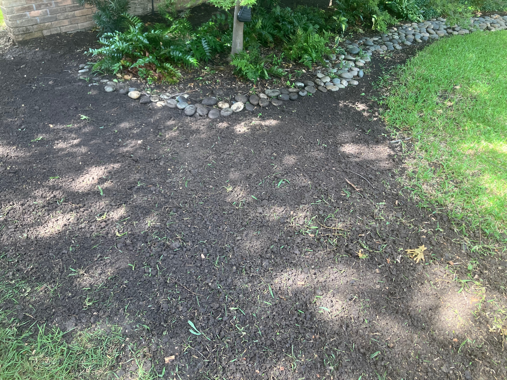
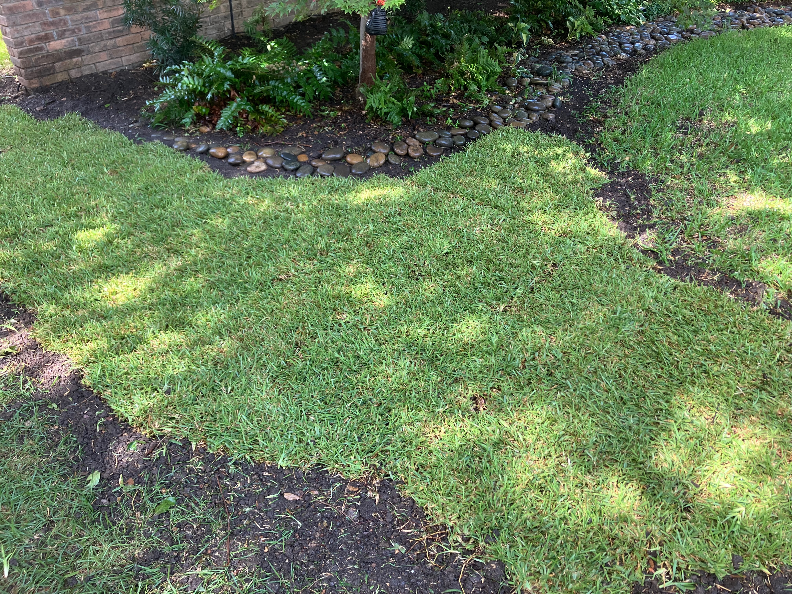
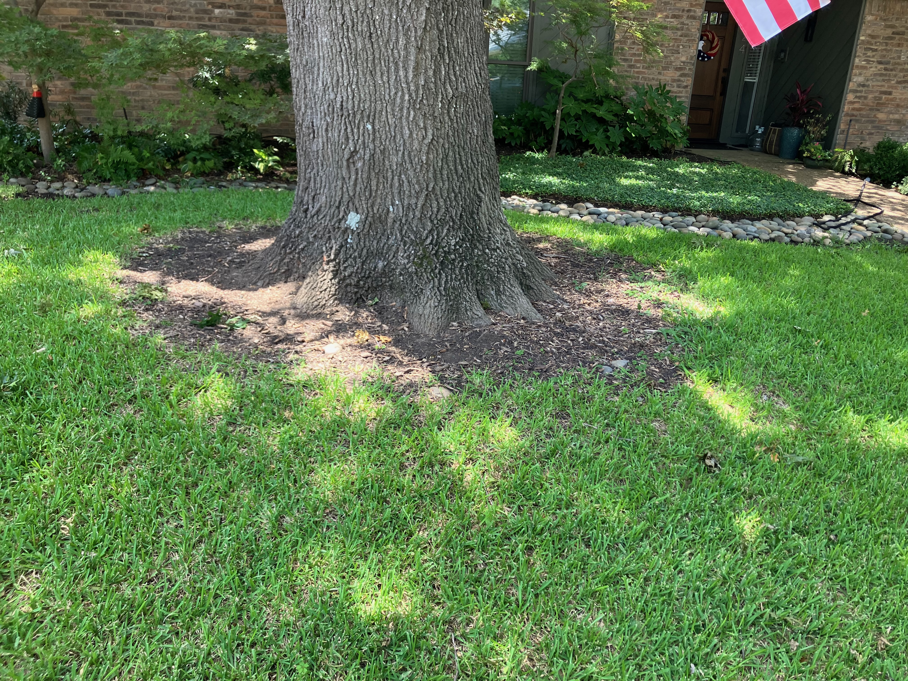
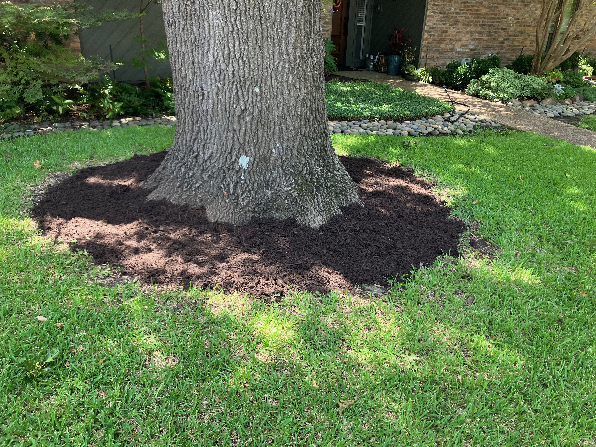
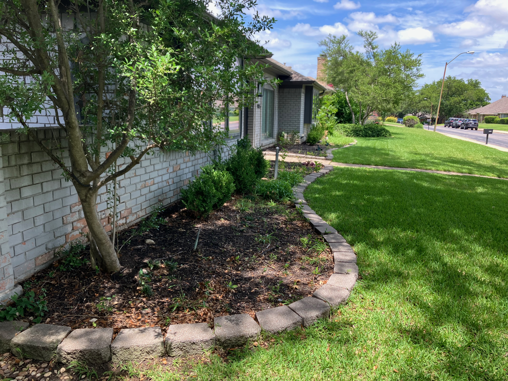
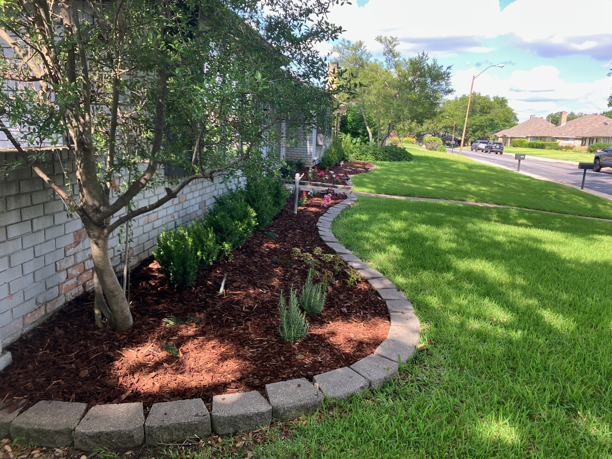

Lake Highlands Landscaping provides reliable outdoor services including sod installation, flower beds, mulch, lawn care, pressure washing, and more.
Locally owned and operated, serving Lake Highlands and the greater Dallas area.
Get A Free QuoteWhether you're repairing bare patches or installing an entirely new lawn, we properly prepare the area before laying fresh sod for a healthy start. Every installation is finished with clean edges and a thorough cleanup.


Fresh mulch instantly improves curb appeal while helping retain moisture and reduce weeds. We remove debris, redefine bed edges when needed, and install mulch evenly for a clean, professional finish.


We transform outdated or overgrown flower beds with weed removal, edging, fresh mulch, and plant installation. Whether you want a refresh or a complete makeover, we focus on clean lines and lasting curb appeal.


Reliable weekly mowing, trimming, edging, and cleanup to keep your property looking its best throughout the season.
Restore the appearance of driveways, sidewalks, patios, fences, and other outdoor surfaces by removing dirt, algae, mildew, and stains.
Protect your fence from the elements while giving it a rich, refreshed appearance with professional stain application.
Lake Highlands • Dallas • Lakewood • Richardson • Preston Hollow • University Park
Fast, honest quotes with no obligation.
We keep you updated before, during, and after your project.
Attention to detail and pride in every project.
Lake Highlands Landscaping was founded by a local student entrepreneur with a commitment to reliable service, clear communication, and quality workmanship.
Every project is treated with care, whether it's a simple mulch refresh or a complete landscape transformation.
From lawn care and sod installation to flower beds, mulch, and outdoor upgrades, every project is completed with pride and a focus on leaving your property looking its best.
Tell us about your project and we’ll get back to you.